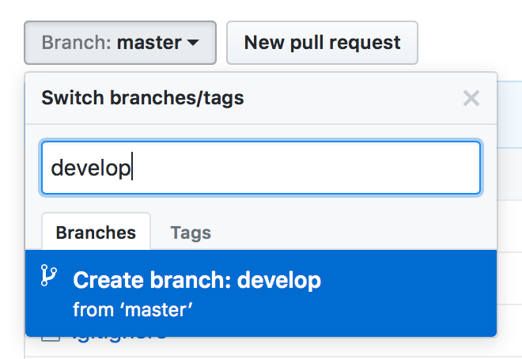
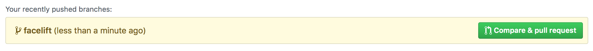
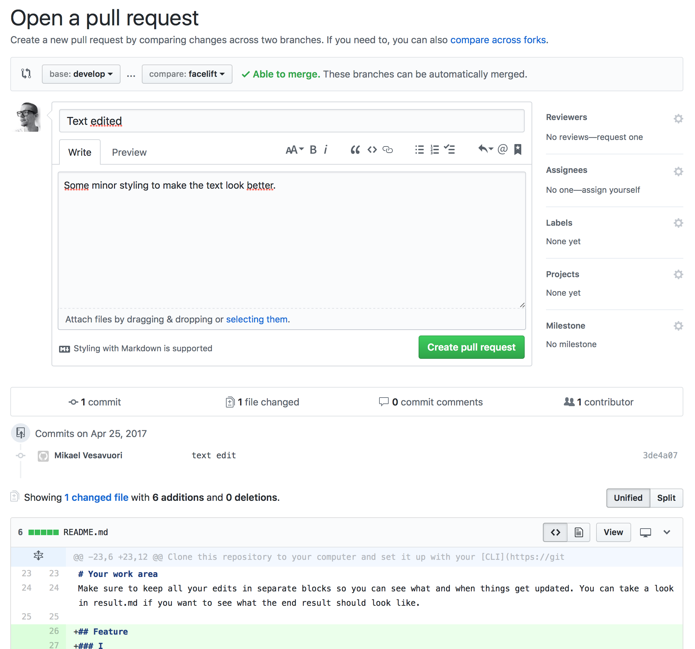
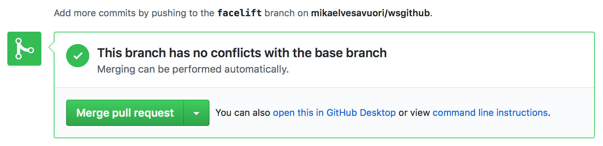
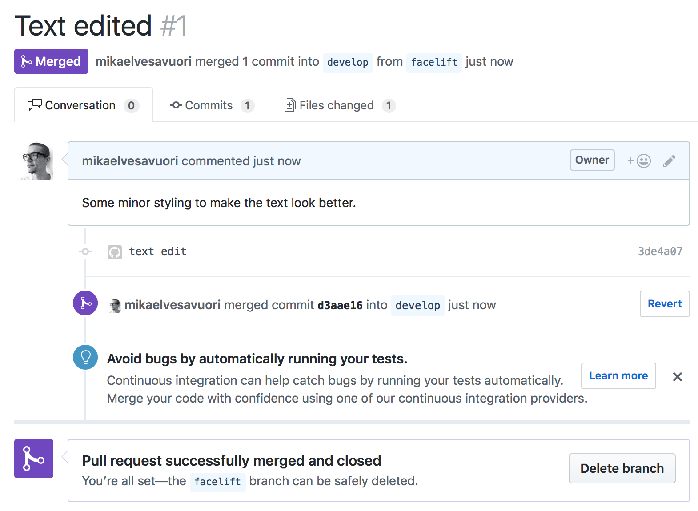
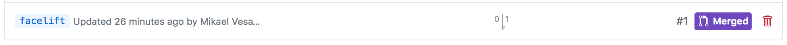
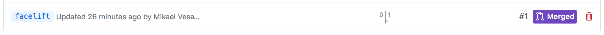
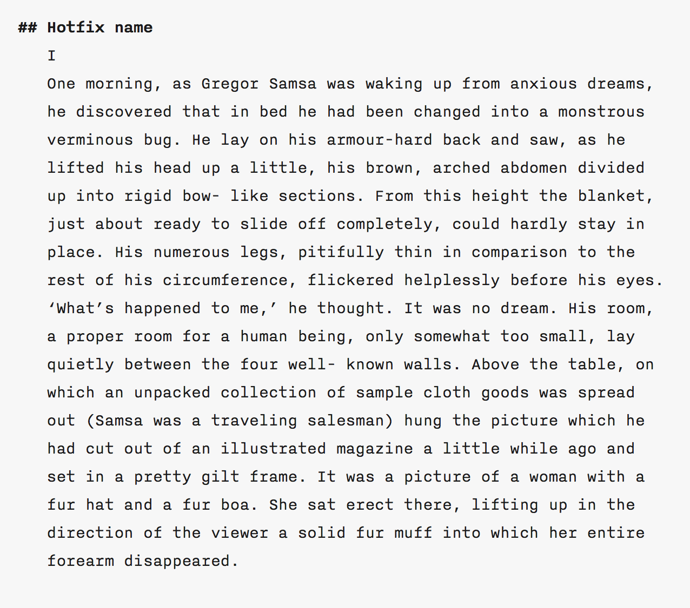

GitFlow Workshop
Workshop on how to use Git for feature branching and running a project according to the GitFlow process.
Introduction
A core concept in Git is the concept of branches. On a personal, small-scale or fairly uncomplicated project you might not have the need to run separate branches. The case then is usually simply to push to master. But what should one do when working on big projects? The GitFlow process is one way of solving this issue.

This workshop will focus on training us in the use of the well-established GitFlow model. Successful use of this model will allow us to keep better track of our own changes, and ultimately provide a safer workflow for the collective master branch which will henceforth only receive reviewed code. GitFlow offers some additional structure to the more general so-called feature branch workflow, but all in all they work pretty much the same way. The main difference could be stated that, in the GitFlow process, branches are also used for releases and hotfixes (and potentially other classes of important branches) beyond just the master and develop branches.
Remember that Git is essentially just a logging system to determine where, what and in which context changes have taken place. When working on a larger project it makes sense to isolate any work you are doing from the work of others until your work is ready for review and subsequent integration into the overall master branch of the project. The most common way of achieving this isolation is by working in a separate branch of the project.
Because Git tracks changes in files, rather than actual files, you don't (usually) need multiple sets of the project files. However, what you need to do is always make sure you work in the correct branch, so changes don't carry over straight into another branch, like the develop or master branches.
Preparations
What to do before starting
Prerequisites
This workshop assumes that the following criteria is met.
Overview of commands
Much of what is going to happen in this workshop will be familiar to you on some level. Below I've outlined the general CLI commands and steps you will learn in order to proficiently work with branches.
If not using a CLI, any kind of Git GUI tool will have interactions corresponding to these commands.
Don't use $ in your CLI
Please note that the dollar sign ($) always denotes the command line. Don't copy it into your CLI – use the rest of the text.
Structure of branches
The following is how we will use branching in this workshop, which also corresponds to the overall GitFlow workflow.

Diagram by Vincent Driessen, the creator of GitFlow.
Task 1
Setup a develop branch
1. Add the develop branch
The very first thing we want to do is make sure we have a develop branch available so our code doesn't mess with the code that is currently deployed on master.
CLI
You can list the current branches in the project with $ git branch. It won't say much right now, so let's create the develop branch.
Enter $ git branch develop and run $ git branch again. You will now see two branches and that master is highlighted.
Try switching to the develop branch by entering $ git checkout develop and then $ git branch. Finally, return to the master so we can sync this with the remote.
GitHub + CLI
Starting with the remote branch first?
Using the GitHub web interface means that we can only directly affect the remote repository with the changes we do in the web GUI.
You can choose to follow along with the following example, which for steps 1 and 2 will be in reverse-order to the intended workshop order. It works just as well, but is likely a much less common pattern than creating the local branch first.
On the repo's front page you will find the branch selector. Here you will find all of the branches in the project. Click the selector button and type in a new branch name, and then hit the "Create branch" button.

We need to synchronize the branch that now only exists on the remote with our computer. Do this by running (in the CLI) $ git pull to retrieve the new branch, followed by $ git checkout develop to step into the branch and make sure it is being tracked. End by running $ git checkout master to return.
Bitbucket
–
Visual Studio 2015
In the Team Explorer's "Branches" view, right-click on the branch you want to branch out from, for example, "master". Click "New Local Branch From..." and enter the name of the new branch in the next screen. You can now switch between the branches by double-clicking on the one you wish to work on.
2. Sync branches with the remote repository
Our new branch should be now living on our computer – nice! However we need it on our remote as well, so let's push this change.
CLI
Make sure you are on the master branch, and then run $ git push -u origin develop. We have now pushed the new branch as well as used the -u flag to signal that any push/pull will now go to develop as a default.
GitHub + CLI
–
Bitbucket
–
Visual Studio 2015
In the Team Explorer's "Branches" view, right-click on the branch you want to branch out from, for example, "master". Click "New Local Branch From..." and enter the name of the new branch in the next screen. You can now switch between the branches by double-clicking on the one you wish to work on.
Task 2
Feature branch to fix styling
1. Add a new feature branch
We will need a feature branch derived from develop so we can start working on the styling.
CLI
Switch to the development branch by running $ git checkout develop. You should now be on that specific branch, meaning all edits will be done only to that branch. As before, you can see your current branch by entering $ git status or $ git branch.
Add it by entering $ git checkout -b facelift develop into the CLI. You will automatically checkout the new facelift branch.
Run $ git push origin facelift to sync the new branch with the remote.
GitHub + CLI
–
Bitbucket
–
Visual Studio 2015
In the Team Explorer's "Branches" view, right-click on the branch you want to branch out from, for example, "master". Click "New Local Branch From..." and enter the name of the new branch in the next screen. You can now switch between the branches by double-clicking on the one you wish to work on.
2. Edit styles in the facelift branch
Our first real task will be to add some very simple styling to our text.
Working with readme.md
Confused? Go ahead and refer to result.md if something isn't entirely clear about how it should look.
All
Make sure you are on the facelift branch.
Open up readme.md in a text editor or IDE, and find the section called "Initial text". Copy the entire block of text and paste it above the previous "Initial text" block.
Replace "Initial text" with "Feature" or something similar. Add three hash characters (#) before the "I" (signalling that this is a third-level heading in the Markdown language). Make sure there is a space between the third hash and the "I". Also, insert a line break between the two paragraphs so the text doesn't look so cramped.

If you run $ git status (or whatever similar functionality you have in your GUI), you should see that some changes have been made. Add the file, commit, and then push the changes to the remote's facelift branch. The edit will now only be seen in readme.md on the facelift branch and not in any of the others.
Task 3
Pull requests and clean-up
1. Create pull request
Only available via GUI
The pull request is used as a way to communicate to your team that changes have taken place and that you wish these to be reviewed and integrated into the main branch (develop or master). A pull request should therefore always contain a pertinent, meaningful description so others know what you've done.
The changes we made and pushed to our own facelift branch are now uploaded, but unfortunately also contained and not integrated. What a shame that our nice styling is not available for others to see! ☹ Let's fix this.
GitHub + CLI
On the repository front page you will have an indication that a branch was updated. Click the button "Compare & pull request".
On the following screen you should make all the necessary comments to inform others about what you've done with the code. You may also add reviewers, labels and other stuff here. Be sure that you are asking to merge into the correct branch, called the "Base".
Finalize the pull request by clicking "Create pull request".
Bitbucket
In Bitbucket there is a choice to "Close branch" after the pull request is merged. Click "Create pull request".
Visual Studio 2015
More about pull requests for VS2015, or read this for some overview.
Creating a pull request in VS2015 requires that you are connected to Team Services. When you have pushed a commit, you will see an update panel in the "Code" section of the TFS/VS web site - click on "Create a pull request".

Make your comments in the view and request a pull. Approve or comment as needed in the Pull Requests view. When merging you may choose to delete the source branch. However, it doesn't seem like the local branch will be deleted.
2. Merge a pull request
Only available via GUI
Creating the pull request is half the work – now someone (in this case, us) needs to check and approve the request and do the actual merging of code.
Detached HEAD
Someday you might encounter a warning about the branch you are working on having a detached HEAD. [...]
GitHub + CLI
Pull requests will be visible in the "Pull requests" panel. Click it and the pull request you just created should be visible. If you click it, the next screen will give a bunch of information that was created when making the request. You will also see if it's possible to do an automatic merge. Click "Merge" to
It's all golden now, so let's click "Delete branch" to save time from doing the remote removal through a CLI.

Go to the repository front page and switch to the develop branch and you should now see that the facelift work we did is now integrated into our development code. Woop woop!
Bitbucket
The pull request is done in Bitbucket or another GUI. In Bitbucket you will find "Pull requests" on the left-hand side panel, under the "Navigation" heading.
Valid users can "Approve" and "Unapprove" a pull request. The actual merge takes place when the "Merge" button is clicked. Make sure that "Source" and "Destination" are correct.
NOTE: In Bitbucket there is a choice to "Close source branch" in the "Merge pull request" panel. This eliminates the below step of erasing the remote (Bitbucket) repository.
Visual Studio 2015
In the Team Explorer's "Branches" view, right-click the develop (or master) branch and click "Merge From...". In "Merge from branch" simply choose which feature branch you want integrated into the develop (or master) branch. Finally, click "Merge" and make sure to Sync the merge.
3. Delete local branch
We need to get rid of the local facelift branch as it has no more use for us.
All
In your CLI, run $ git branch -d facelift. You might get a warning that the facelift branch is not fully merged but this shouldn't be a problem if you double-checked that the facelift feature got integrated into develop. Make sure the branch is removed by running $ git branch.
4. Delete remote branch
Now, we need to get rid of the remote facelift branch as it has no more use for us. Follow the following step if you didn't remove it through the GitHub or Bitbucket interfaces.
CLI
Run $ git push origin --delete [branch-name].
GitHub + CLI
You can remove branches in at least two ways: either through the Code screen and then Branches (which I will provide instructions for below) or through the Pull requests screen (check under closed; open the relevant merge; in the following screen click Delete branch).
 

Bitbucket
In Bitbucket a branch (sorted by "active" or "merged") can be deleted by going to "Branches" under the "Navigation" panel. To the far right a "..." symbol can be clicked. If you have merged your changes, make sure to get rid of old branches. To do so, click "Delete branch" in the "..." panel.
Visual Studio 2015
–
Task 4
Hotfix branch for corrections
1. Add a new hotfix branch
Oftentimes, you will have to create a hotfix which may come as an abrupt surprise to your workday. Fear not! By creating a hotfix branch, we will attempt to quickly fix whatever is broken and base it entirely on stable master branch code.
In this case, someone made a derp and totally missed that the dude in The Metamorphosis is Czech and not Swedish. Doh! Let's change Johan Andersson to Gregor Samsa to redeem ourselves for this error. What's more is that he shouldn't be a spider, he's a bug! Oh - and we need to take care of this right away so no "oh, I'll do this thing here first" or "just one more game of Candy Crush plz :(".
All
First, we need to create a branch. We'll call it hotfix-name so we give at least some semantic context for what our fix is about. This procedure is identical to what we did in Task 2. This time, however, you want to derive from the master branch, so the CLI command would be $ git checkout -b hotfix-name master.
When it's been created, make sure you are on the hotfix-name branch.
Open up readme.md in a text editor or IDE. Because nothing new has happened to our readme.md file (and nothing's been pushed/pulled), we won't see the styling changes we made previously – they are contained only in develop. That's entirely OK! We just want to fix the name problem so readers will be happy as soon as possible.
Just like last time, copy the text block with the heading "Initial text" and paste it over the first one, so we have two copies. Change the new, uppermost block's heading to "Hotfix" or something similar so we can distinguish between these later.
2. Push, control and clean
If you run $ git status (or whatever similar functionality you have in your GUI), you should see that some changes have been made. Add, commit and push the changes to our remote's hotfix-name branch. The edit will now only be seen in readme.md on the hotfix-name branch and not in any of the others.
Finally, we again need to make a pull request, get it accepted and merged into master, and then delete local and remote versions of the hotfix-name branch.
Task 5
Release branch for final version
1. Create your first release
Now for our final task. We want to create a dedicated release version containing all of the work we've done thus far. The branch, which we will call release-1.0, will serve as our real, foundational public version. Step one is to push develop, which now contains the hotfixes and the styling feature update, into master, forming a new stable version. Finally, the new master will be used as the starting point for release-1.0. While master will receive updates as long as our project lives, these specific release versions will never be updated again.
CLI
You should receive a merge conflict when trying to merge develop into master because of the two different edits to readme.md. Solve the conflict by accepting both changes either with a diff checker or manually by removing the merge tags.
git checkout develop
git pull origin develop
git checkout master
git pull origin master
git merge develop
git push origin master
git checkout develop
git merge master
git push
GitHub + CLI
–
Bitbucket
–
Visual Studio 2015
–